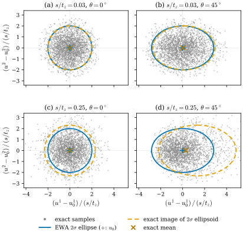
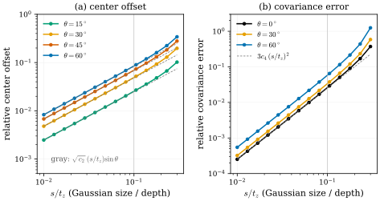
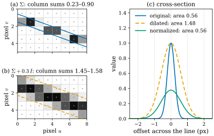

29.3 Splatting Is Linearization
Goals
- affine map은 Gaussian을 정확히 Gaussian으로 보내지만 perspective projection은 그렇지 않다는 것을 설명하고, splatting의 \(\Sigma_{2D} = JW\Sigma W^{\mathsf T}J^{\mathsf T}\)를 투영의 differential \(J\)로 만든 1차 근사로 유도할 수 있다.
- 이 근사를 “ray의 부채꼴을 중심 ray에 평행한 직선 다발로 바꾸는 것”으로 그림으로 설명하고, 근사가 정확한 경우와 깨지는 경우를 말할 수 있다.
- 근사의 오차가 투영의 2차 항에서 오며 Gaussian의 크기/깊이 비와 off-axis 각에 따라 어떻게 커지는지 수치로 말할 수 있다.
- screen-space dilation과 Mip-Splatting의 filter를 “covariance를 더하는 low-pass filter”로 설명하고, 정규화의 유무가 무엇을 바꾸는지 말할 수 있다.
Prerequisites
- Section 29.1: 변환 법칙 \(\Sigma \mapsto A\Sigma A^{\mathsf T}\)(Proposition 29.1.3), \(\Sigma\)는 투영으로 밀어 보낼 수 있다(How Σ and Σ⁻¹ Transform), 화면 위 범위 (29.1.7)
- Section 0.6: differential은 chart에서 Jacobian matrix다(Definition 0.6.5), chain rule (0.6.5)
- Section 0.7: backpropagation은 covector의 pullback이다
- pinhole camera model(\(f_x, f_y, c_x, c_y\))과 3DGS의 rasterization 파이프라인 [Kerbl23]
Motivation
Section 29.2까지는 3D 공간 안의 Gaussian 하나를 보았다. 렌더링을 하려면 그 Gaussian이 화면에서 어떤 모양으로 보이는지, 곧 화면 위의 footprint가 필요하다. Section 29.1에서 본 대로 covariance는 linear map으로 밀어 보낼 수 있다. 그런데 카메라의 투영은 linear map이 아니다. 깊이로 나누기 때문이다.
3DGS는 이 문제를 EWA splatting [Zwicker01]의 방법으로 푼다. 투영을 Gaussian의 중심에서 1차 근사하고, 그 근사가 affine map이라는 사실을 이용한다. 결과가 논문의 식 \(\Sigma' = JW\Sigma W^{\mathsf T}J^{\mathsf T}\)이다 [Kerbl23]. 이 절은 세 질문에 답한다. \(J\)는 기하적으로 무엇인가? 1차 근사는 무엇을 버리는가? 버린 것은 얼마나 큰가?
Affine Maps Send Gaussians to Gaussians
파이프라인의 첫 단계는 world 좌표 \(x\)를 camera 좌표 \(t = (t_x, t_y, t_z)\)로 바꾸는 것이다. view matrix의 회전 부분을 \(W \in \mathrm{SO}(3)\), translation을 \(b\)라 하면
이다. 이 \(W\)는 3DGS 논문의 기호이고, Part I의 shape operator \(W_p\)와는 관계가 없다. affine map이므로 Proposition 29.1.3에 의해 이 단계는 정확하다. camera 좌표의 Gaussian은 중심 \(t_0\), covariance \(\Sigma_c\)인 Gaussian이다.
정확한 것이 하나 더 있다. 3차원에서 2차원으로 가는 linear map, 예를 들어 \(t_z\)를 버리는 orthographic projection도 Gaussian을 Gaussian으로 보낸다.
Proposition 29.3.1 (linear images and marginals of a Gaussian). \(A\)가 rank 2인 \(2 \times 3\) 행렬이고 \(G\)가 중심 \(t_0\), covariance \(\Sigma_c\)인 3D Gaussian이라 하자. \(\R^2\)의 점 \(u\)에 대해 \(G\)를 affine fiber \(\{t : A(t - t_0) = u\}\)(\(\ker A\)에 평행한 직선)를 따라 적분한 값은
\[ \int_{A(t - t_0) = u} G\,d\ell = C\,\exp\!\Big(-\tfrac12\,u^{\mathsf T}(A\Sigma_cA^{\mathsf T})^{-1}u\Big) \]
이다(\(C\)는 \(u\)에 무관한 양수). 곧 직선을 따라 적분하면 covariance가 \(A\Sigma_cA^{\mathsf T}\)인 2D Gaussian이 된다. 확률의 말로는, \(t\)가 Gaussian을 따르면 \(At\)도 Gaussian을 따르고 그 covariance가 \(A\Sigma_cA^{\mathsf T}\)라는 말이다.
Derivation. Section 29.1처럼 \(t = t_0 + \Sigma_c^{1/2}y\)(\(y\)는 표준 Gaussian)로 쓰고 \(B = A\Sigma_c^{1/2}\)(rank 2)라 하면 \(A(t - t_0) = By\)이다. \(y\)의 좌표를 회전해 \(\ker B\)가 셋째 좌표축이 되게 하면 \(B = (B_0\ \ 0)\) (\(B_0\)는 invertible \(2 \times 2\))이고, fiber는 셋째 축에 평행한 직선이다. 표준 Gaussian을 그 축을 따라 적분하면 나머지 두 좌표 \(y'\)의 표준 Gaussian이 남고(적분 변수를 \(t\)에서 \(y\)로 바꿀 때 생기는 상수는 \(C\)에 들어간다), \(u = B_0y'\)의 covariance는 \(B_0B_0^{\mathsf T} = BB^{\mathsf T} = A\Sigma_cA^{\mathsf T}\)이다. 같은 계산이 Exercise 29.1.4의 “투영은 블록을 자르는 것이 아니다”의 내용이다.
volume rendering에서 한 픽셀이 보는 것은 그 픽셀을 지나는 ray 위에 쌓인 밀도다. 그래서 EWA volume splatting은 3D kernel을 ray를 따라 적분한 것을 footprint로 쓴다 [Zwicker01]. ray들이 서로 평행하다면(orthographic camera) Proposition 29.3.1이 그 적분을 정확히 계산해 준다. 문제는 pinhole camera의 ray가 평행하지 않다는 것이다.
Perspective Projection Is Not Affine
camera 좌표에서 픽셀 좌표로 가는 pinhole projection은
이다 [HZ]. \(\varphi\)는 smooth map이고, 같은 픽셀로 가는 점들, 곧 fiber \(\varphi^{-1}(u)\)는 카메라 중심 \(O\)에서 나가는 ray(반직선)다. ray들은 \(O\)에서 부채꼴로 퍼진다. 그래서 \(\varphi\)는 affine이 아니고, Gaussian의 image는 Gaussian이 아니다. 가까운 쪽 절반은 크게, 먼 쪽 절반은 작게 보이므로 image의 distribution은 한쪽으로 치우친다(Figure 29.3.1의 (b)).
Linearize: The Differential \(J\)
EWA의 처방은 미적분의 기본 처방이다. \(\varphi\)를 Gaussian의 중심 \(t_0\)에서 1차 Taylor 근사로 바꾼다.
\[ \varphi(t) \approx \tilde\varphi(t) = \varphi(t_0) + J\,(t - t_0), \qquad J = D\varphi(t_0). \]
\(J\)는 Definition 0.6.5의 differential \(d\varphi_{t_0}\)을 좌표로 쓴 Jacobian matrix이고, (29.3.2)를 미분하면
이다. 3DGS 논문은 \(3 \times 3\) 결과 \(\Sigma'\)의 셋째 행과 셋째 열을 버려 \(2 \times 2\) 행렬을 얻고 [Kerbl23], 공식 구현은 셋째 행이 \(0\)인 \(3 \times 3\) 행렬로 \(J\)를 쓴다. 어느 쪽이든 위의 \(2 \times 3\) 행렬을 쓰는 것과 같다. \(\tilde\varphi\)는 affine이므로 (29.3.1)과 Proposition 29.3.1을 차례로 쓰면
를 얻는다. 이것이 화면 위의 2D Gaussian이다. 한 문장으로 하면 splatting은 differential에 의한 pushforward다. tangent vector가 \(d\varphi\)로 밀려 가듯이((0.6.5)), contravariant 2-tensor인 \(\Sigma_c\)도 \(J\)로 밀려 간다. 정확한 \(\varphi\)는 Gaussian을 Gaussian이 아닌 것으로 보내지만, 그 differential은 Gaussian을 Gaussian으로 보낸다.
\(J\)의 kernel을 보자. (29.3.3)에서 \(Jt_0 = 0\)이다. 곧 \(\ker J\)는 중심을 지나는 ray의 방향 \(t_0\)이다. 깊이 방향으로 움직이면 픽셀이 변하지 않는다는 말이고, 이것이 \(\varphi\)의 fiber가 ray라는 사실의 무한소판이다(Section 27.1). 이 사실에서 1차 근사의 기하가 나온다.
Proposition 29.3.2 (what the linearization does). \(\tilde\varphi\)의 fiber는 중심 ray \(Ot_0\)에 평행한 직선들이다. 그리고 \(\tilde\varphi(t)\)는 다음 두 단계로 계산된다. (1) \(t\)를 \(t_0\) 방향으로 미끄러뜨려 깊이 평면 \(\{t_z = t_{0z}\}\) 위의 점 \(t'\)으로 보낸다. (2) \(t'\)을 정확한 \(\varphi\)로 투영한다. 특히 깊이 평면 위의 점에서는 \(\tilde\varphi = \varphi\)이다.
Derivation. \(\ker J = \Span\{t_0\}\)이므로 \(\tilde\varphi\)는 \(t_0\) 방향의 직선 위에서 일정하다. \(t = t_0 + v\)에서 \(t' = t_0 + v + \lambda t_0\)(\(\lambda = -v_z/t_{0z}\))은 같은 직선 위에 있고 \(t'_z = t_{0z}\)다. 깊이가 고정된 평면 위에서 \(\varphi(t') = (f_xt'_x/t_{0z} + c_x, \dots)\)는 \(t'\)의 affine 함수이고, \(t_0\)에서 \(\tilde\varphi\)와 값과 (평면 방향의) 미분이 같으므로 그 평면 위에서 \(\tilde\varphi\)와 같다. 따라서 \(\tilde\varphi(t) = \tilde\varphi(t') = \varphi(t')\)이다.
![두 패널. 왼쪽 (a)는 가로축 t_x, 세로축 t_z(depth)인 평면이다. 아래 원점에 카메라 중심 O가 있고, t_z = 1에 검은 가로선(image line), t_z = 2.5에 회색 점선(depth line)이 있다. 오른쪽 위에 회색으로 칠한 Gaussian과 그 2σ 원(검정), 중심 t₀가 있다. O에서 원에 접하는 주황 직선 두 개(exact rays)가 부채꼴로 퍼지고, 원에 접하면서 O와 t₀를 잇는 회색 선에 평행한 파란 점선 두 개가 depth line과 점 P₋, P₊에서 만난다. O에서 P₋, P₊로 가는 가는 파란 선이 있다. image line 바로 위에 주황 구간(exact), 바로 아래에 파란 구간(EWA)이 표시되어 있고 파란 구간이 왼쪽으로 조금 치우치고 짧다. 오른쪽 (b)는 가로축 image coordinate u, 세로축 density인 그래프로, 주황 곡선(exact p(u))은 꼭대기가 조금 왼쪽에 있고 오른쪽 꼬리가 길며, 파란 곡선(EWA Gaussian)은 좌우로 symmetric하다. u₀ = φ(t₀)에 파란 점선, exact mean에 주황 점선이 있다.](figures/fig-29-3-1-fan-vs-parallel.svg)
Figure 29.3.1의 (a)를 따라가 보자. 정확한 투영은 \(O\)에서 원에 접하는 두 주황 직선이 정한다. EWA는 이 부채꼴을 버리고, 중심 ray에 평행한 두 파란 점선을 쓴다. 파란 점선을 깊이 직선까지 따라 내려간 점 \(P_\pm\)를 다시 정확히 투영하면 image line의 파란 구간이 나온다. 원의 위쪽(먼 쪽)에 닿는 왼쪽 끝에서는 주황과 파랑의 차이가 작지만(0.17 대 0.12), 아래쪽(가까운 쪽)에 닿는 오른쪽 끝에서는 주황 ray가 훨씬 더 벌어진다(1.20 대 1.04). 그래서 정확한 구간이 더 넓고 바깥으로 치우친다. (b)는 같은 일을 distribution으로 본 것이다. EWA의 파란 Gaussian은 symmetric하지만 정확한 주황 distribution은 바깥쪽 꼬리가 길다.
Proposition에서 바로 나오는 결과가 하나 있다. 깊이 평면 위에 놓인 점들은 \(\tilde\varphi = \varphi\)이므로, image plane에 평행한 납작한 Gaussian은 정확히 투영된다. 그 Gaussian이 화면 가장자리에 있어도(off-axis) 마찬가지다. 오차는 Gaussian이 깊이 방향으로 두께를 가질 때만 생긴다.
EWA의 원래 맥락에서 이것은 ray를 따라 적분하는 문제였다. 1차 근사 아래에서는 ray들이 서로 평행한 직선(\(\tilde\varphi\)의 fiber)이 되므로, Proposition 29.3.1에 의해 ray를 따른 적분이 정확히 \(\Sigma_{2D}\)를 covariance로 하는 2D Gaussian이 된다 [Zwicker01]. 3DGS는 그 2D Gaussian의 모양만 쓰고, 적분에서 나오는 상수 대신 정점의 값을 opacity \(\alpha\)로 둔다 [Kerbl23].
How Wrong Is the Linearization?
버린 것은 Taylor 전개의 2차 이상의 항이다. \(t = t_0 + \delta\)이면
\[ \begin{aligned} \varphi(t_0 + \delta) &= \varphi(t_0) + J\delta + \tfrac12 H(\delta, \delta) + O(\abs{\delta}^3), \\ H_x &= f_x\begin{pmatrix} 0 & 0 & -t_z^{-2} \\ 0 & 0 & 0 \\ -t_z^{-2} & 0 & 2t_xt_z^{-3} \end{pmatrix} \end{aligned} \]
이다. \(H_x\)는 \(\varphi\)의 첫째 성분의 Hessian matrix이고 \(H_y\)도 같은 꼴이다. 모든 성분에 \(t_z\) 방향이 들어 있다. 앞에서 본 대로 깊이 방향의 퍼짐 \(\delta_z\)가 없으면 2차 항이 \(0\)이다. 크기를 가늠하면, \(\delta\)가 Gaussian의 표준편차 \(s\) 정도일 때 2차 항과 1차 항의 비는 대략 \(s/t_z\)이고, off-axis 각 \(\theta\)(\(\tan\theta = t_x/t_z\))가 커지면 \(2t_x/t_z^3\) 항이 커진다.
Proposition 29.3.3 (leading-order error for an isotropic Gaussian). \(\Sigma_c = s^2I_3\), \(t_0 = t_z(\tan\theta, 0, 1)\)이라 하자. \(s/t_z\)가 작을 때 정확한 pushforward와 EWA를 비교하면
- 중심의 어긋남: \(\mathbb{E}[\varphi(t)] - \varphi(t_0) \approx \tfrac12\mathbb{E}[H(\delta, \delta)]\)이고, 이것은 \(\big(f_x s^2\tan\theta/t_z^2,\ 0\big)\)이다. footprint의 가장 큰 표준편차(\(f_xs/(t_z\cos\theta)\))로 나누면 \((s/t_z)\sin\theta\)이다.
- covariance의 상대 오차: on-axis(\(\theta = 0\))에서 \(\mathrm{Var}[\varphi_x] \approx (f_xs/t_z)^2\big(1 + 3(s/t_z)^2\big)\), 곧 약 \(3(s/t_z)^2\)이다.
on-axis에서는 symmetry 때문에 중심의 어긋남이 정확히 \(0\)이다.
Derivation. \(\mathbb{E}[\delta\delta^{\mathsf T}] = s^2I_3\)이므로 \(\mathbb{E}[H_x(\delta, \delta)] = s^2\tr H_x = 2f_xs^2t_x/t_z^3\)이고, \(t_x = t_z\tan\theta\)를 넣는다. footprint의 \(x\) 방향 분산은 \(J\Sigma_cJ^{\mathsf T}\)의 \((1,1)\) 성분 \((f_xs/t_z)^2(1 + \tan^2\theta)\)이다. on-axis에서 \(\varphi_x = f_x\delta_x/(t_z + \delta_z)\)이고 \(\varepsilon = \delta_z/t_z\)에 대해 \(\mathbb{E}[(1 + \varepsilon)^{-2}] = 1 + 3\mathbb{E}[\varepsilon^2] + O(\varepsilon^4)\)이다.
공식이 맞는지, 그리고 \(s/t_z\)가 클 때는 어떤지를 수치로 확인하자. 3D Gaussian을 정확한 \(\varphi\)로 보낸 distribution과 \(\tilde\varphi\)로 보낸 distribution의 평균과 covariance를 비교한다. 3DGS가 화면에서 Gaussian의 범위를 \(3\sigma\)로 잡는 것(Section 29.1)에 맞추고 정확한 pushforward의 moment가 유한하도록(\(t_z \le 0\)인 점을 빼기 위해서다), Gaussian을 3D의 \(3\sigma\) ellipsoid 안으로 제한했다. 평균과 covariance는 이 잘린 Gaussian에 대한 적분을 수치적분(spherical coordinates에서 Gauss–Legendre quadrature)으로 정확히 계산했다. 제한 때문에 위 공식의 상수가 조금 바뀐다. 중심의 어긋남에는 \(\sqrt{c_2}\)가 곱해지고(\(c_2 = \mathbb{E}[y_1^2] = 0.918\), 잘린 표준 Gaussian \(y\)의 축당 분산), covariance 오차의 coefficient 3은 \(3c_4\)가 된다(\(c_4 = \mathbb{E}[y_1^2y_3^2]/\mathbb{E}[y_1^2] = 0.839\)). 자르지 않은 Gaussian이면 두 상수가 모두 1이다.

Figure 29.3.2를 (a)부터 보자. 표준편차가 깊이의 3%인 Gaussian은 on-axis에서도 \(45^\circ\)에서도 파란 EWA ellipse와 주황 정확한 윤곽이 구별되지 않는다. (b)의 ellipse가 가로로 긴 것은 \(J\)가 off-axis에서 화면을 늘이기 때문이고, EWA는 이것을 정확히 잡는다. 아래 줄로 내려가 Gaussian을 깊이의 25%로 키우면 차이가 보인다. on-axis (c)에서는 symmetry 때문에 중심은 그대로이고 윤곽만 커진다. off-axis (d)에서는 주황 윤곽이 오른쪽으로 크게 밀리고, 회색 점 구름도 오른쪽으로 꼬리를 끈다. Figure 29.3.3은 이 어긋남을 \(s/t_z\)와 \(\theta\)의 함수로 잰다.

Figure 29.3.3의 (a)를 보자. 네 색의 곡선이 모두 기울기 1의 직선이고, \(s/t_z\)가 0.1 근처에 이를 때까지 회색 예측선과 겹친다. 각이 \(30^\circ\)에서 \(60^\circ\)로 커지면 곡선은 \(\sin 60^\circ/\sin 30^\circ \approx 1.73\)배 위로 올라간다. 중심의 어긋남은 \(\sin\theta\)에 비례하기 때문이다. (b)에서는 기울기가 2다. on-axis의 검은 곡선은 예측선 \(3c_4(s/t_z)^2\)와 겹치다가 0.2 근처부터 위로 휘고, off-axis 곡선들은 같은 기울기로 그보다 위에 있다. 크기를 두 배로 하면 중심의 오차는 두 배, covariance의 오차는 네 배가 된다.
Example 29.3.4 (numbers). Figure 29.3.3의 계산에서 몇 점을 표로 옮긴다. 각 칸은 “중심의 어긋남 / covariance의 상대 오차”다.
| \(\theta\) | \(s/t_z = 0.01\) | \(0.1\) | \(0.2\) | \(0.3\) |
|---|---|---|---|---|
| \(0^\circ\) | 0 / 0.03% | 0 / 2.6% | 0 / 12% | 0 / 37% |
| \(30^\circ\) | 0.48% / 0.03% | 4.9% / 3.4% | 11% / 16% | 20% / 59% |
| \(60^\circ\) | 0.83% / 0.05% | 8.5% / 5.8% | 19% / 29% | 34% / 125% |
화면 위의 크기로 바꾸어 읽으면 이렇다. 초점거리 \(f = 1000\) px에서 footprint의 표준편차가 10 px인 Gaussian은 \(s/t_z \approx 0.01\)이므로 EWA의 오차는 무시할 수 있다. footprint의 표준편차가 200 px, 곧 화면의 큰 부분을 덮는 Gaussian은 \(s/t_z \approx 0.2\)이므로 covariance가 12% 이상 틀리고, 화면 가장자리라면 중심도 footprint 크기의 10–20%만큼 어긋난다. 이 환산은 isotropic Gaussian에 대한 것이다. 일반적으로 covariance의 오차를 정하는 것은 깊이 방향(\(t_z\) 방향)의 퍼짐이다. 깊이 방향으로 길쭉한 \(s = (0.01, 0.01, 0.2)\)은 on-axis에서 12% 틀리지만, 옆으로 길쭉한 \(s = (0.2, 0.01, 0.01)\)은 0.03%만 틀린다.
Verification: verify/v-29-3-splatting-linearization.py
Other Camera Models
위의 논리는 pinhole에만 쓰이는 것이 아니다. 카메라 모델이 어떤 smooth map \(\varphi\)이든, Gaussian의 중심에서 그 differential \(J = D\varphi(t_0)\)을 계산해 (29.3.4)에 넣으면 같은 1차 근사가 된다. 예를 들어 fisheye lens의 equidistant model \(u = f\,\vartheta\,(t_x, t_y)/\sqrt{t_x^2 + t_y^2}\) (\(\vartheta\)는 optical axis와 ray가 이루는 각)을 쓰면 \(J\)는 이 식의 Jacobian matrix로 바뀐다. 근사의 질은 그 모델의 Hessian이 정한다.
pinhole은 넓은 각에서 특히 나쁘다. (29.3.3)의 \(J\)는 \(\theta\)가 커질수록 화면을 늘인다. 카메라에서 같은 거리에 있는 Gaussian이라도 off-axis 각이 \(\theta\)이면 반지름 방향(principal point에서 멀어지는 방향)으로 on-axis일 때의 \(1/\cos^2\theta\)배로 늘어나고, \(\theta \to 90^\circ\)에서 발산한다. 같은 Gaussian이라도 화각의 가장자리에서는 footprint가 커지고 2차 항도 커진다(Example 29.3.4의 \(60^\circ\) 줄). 공식 구현은 \(J\)를 계산할 때 \(t_x/t_z\)를 \(\pm 1.3\tan(\mathrm{FoV}_x/2)\) 안으로(\(t_y/t_z\)도 같은 방식으로) 자르는데, 화면 밖 멀리 있는 Gaussian에서 \(J\)가 지나치게 커지는 것을 막는 장치로 볼 수 있다. 화면 전체가 넓은 각을 덮는 fisheye·360 카메라에서는 pinhole의 \(J\)를 그대로 쓸 수 없고, 그 모델의 \(J\)를 써야 한다. 카메라를 \(S^2\)의 chart로 보는 관점은 Section 27.4에서 다룬다.
Dilation and Filters: Adding Covariance
화면은 픽셀로 sample된다. footprint가 픽셀보다 가늘면 픽셀 중심 사이로 빠져나가 aliasing이 생긴다. 고전적인 처방은 low-pass filter, 곧 Gaussian filter와의 convolution이다. Gaussian끼리의 convolution은 covariance를 더한다. 정규화한 2D Gaussian density \(\mathcal N(0, \Sigma)\)에 대해 \(\mathcal N(0, \Sigma_1) * \mathcal N(0, \Sigma_2) = \mathcal N(0, \Sigma_1 + \Sigma_2)\)이고, 정점이 1인 \(G_{\Sigma}(u) = \exp(-\tfrac12 u^{\mathsf T}\Sigma^{-1}u)\)로 쓰면
이다. 확률의 말로는 독립인 두 Gaussian 변수의 합의 covariance가 각 covariance의 합이라는 사실이고, (29.1.5)와 같은 종류의 계산이다. 앞의 인수는 적분(화면 위의 “양”)을 보존하려고 정점이 낮아지는 비율이다.
- 3DGS의 screen-space dilation. 공식 구현은 \(\Sigma_{2D}\)의 대각 성분에 \(0.3\)(pixel²)을 더한다. 곧 \(\Sigma_{2D} \leftarrow \Sigma_{2D} + 0.3\,I_2\)이고, 표준편차 약 \(0.55\) px인 Gaussian filter를 건 것이다. 기본 설정에서는 (29.3.5)의 정규화 인수를 곱하지 않으므로 정점(\(\alpha\))이 그대로 남는다. 2024년 10월에 갱신된 공식 코드에는 Mip-Splatting의 2D filter를 따른
--antialiasing옵션(기본값은 꺼짐)이 있는데, 켜면 같은 \(0.3\,I_2\)를 더하면서 opacity에 정규화 인수 \(\sqrt{\det\Sigma_{2D}/\det(\Sigma_{2D} + 0.3\,I_2)}\)를 곱한다. - Mip-Splatting [Yu24]. 두 filter를 둔다. 3D smoothing filter는 3D covariance에 isotropic 항을 더한다. 그 크기는 학습에 쓴 카메라들이 그 Gaussian을 sample한 가장 높은 빈도(대략 초점거리/깊이)에서 정해지므로, Gaussian이 학습 영상이 구별할 수 있는 것보다 가늘어지지 않는다. 공식 구현에서 이 항의 분산은 \(0.2\,(d/f)^2\)이다(\(d\)는 학습 카메라들에서 잰 가장 작은 깊이, \(f\)는 초점거리). 2D Mip filter는 dilation 대신 픽셀 하나의 box filter를 흉내 내는 Gaussian(분산 \(0.1\) pixel²)을 화면에서 더한다. 두 filter 모두 covariance를 더하는 low-pass filter이고, (29.3.5)의 정규화 인수를 함께 곱해 convolution을 그대로 따른다.

Figure 29.3.4의 (a)를 보자. 파란 띠는 폭이 픽셀의 절반도 안 되어 픽셀 중심을 군데군데만 지나고, 그 사이의 열(셋째, 여섯째)에서는 픽셀 값이 0.2 아래로 떨어진다. 이대로 그리면 선이 끊긴 점선이 된다. (b)처럼 \(0.3\,I_2\)를 더하면 띠가 어디서나 픽셀 중심을 지나 선이 이어진다. (c)는 그 대가를 보여 준다. 정점을 1로 둔 주황 점선은 정규화한 초록 곡선보다 넓이가 2.65배 크다. 화면 위에서 불투명도가 차지하는 “양”이 늘어난 것이다. 이 비율 \(\sqrt{\det(\Sigma_{2D} + 0.3\,I_2)/\det\Sigma_{2D}}\)(이 그림에서도 2.65)는 \(\Sigma_{2D}\)가 작을수록 커진다. 그래서 학습 때보다 멀리서(작게) 보면 작은 Gaussian들이 실제보다 두껍고 밝게 보일 수 있다. Mip-Splatting이 지적한 zoom-out artifact가 이것이다 [Yu24].
Gradients Flow Through \(J\)
학습에서는 loss의 gradient를 Gaussian의 위치 \(\mu\)로 되돌려야 한다. 화면 위의 2D Gaussian은 두 path로 \(t_0\)에 의존한다. 중심 \(u_0 = \varphi(t_0)\)이 하나이고, 모양 \(\Sigma_{2D} = J(t_0)\Sigma_cJ(t_0)^{\mathsf T}\)이 또 하나다. 따라서 chain rule에 의해
\[ \frac{\partial L}{\partial t_0} = \frac{\partial L}{\partial u_0}\,D\varphi(t_0) + \sum_{a,b}\frac{\partial L}{\partial(\Sigma_{2D})_{ab}}\,\frac{\partial(\Sigma_{2D})_{ab}}{\partial t_0} \]
이고, 둘째 항은 \(J\)의 미분 \(\partial J/\partial t_0\)(곧 \(\varphi\)의 2차 미분)을 통과한다. 첫째 항은 covector \(\partial L/\partial u_0\)을 \(d\varphi\)로 당긴 것이다((0.7.2)). 둘째 항은 “footprint를 키우거나 줄이려면 Gaussian을 카메라 쪽으로 당기거나 밀어야 한다”는 정보를 위치에 전한다(Exercise 29.3.5). 공식 구현의 backward pass는 이 둘째 항까지 계산한다(위의 clamp가 걸린 Gaussian에서는 둘째 항 가운데 \(t_x\), \(t_y\) 성분을 \(0\)으로 둔다). 위치 gradient 가운데 화면 좌표에 대한 부분 \(\partial L/\partial u_0\)이 densification에 쓰이는데, 그 기하는 Section 29.5에서 본다.
Summary
- world → camera는 affine이므로 \(\Sigma_c = W\Sigma W^{\mathsf T}\)는 정확하다. linear map으로 투영하거나 평행한 직선을 따라 적분해도 Gaussian은 Gaussian으로 남는다(covariance \(A\Sigma_cA^{\mathsf T}\)).
- pinhole projection \(\varphi\)는 affine이 아니다(fiber가 부채꼴 ray). EWA는 \(\varphi\)를 그 differential \(J = D\varphi(t_0)\)((29.3.3))로 바꾸고, \(\Sigma_{2D} = JW\Sigma W^{\mathsf T}J^{\mathsf T}\)를 얻는다. splatting은 differential에 의한 pushforward다.
- \(\ker J\)는 중심 ray이고, 1차 근사는 부채꼴 ray를 중심 ray에 평행한 직선으로 바꾸는 것이다. image plane에 평행한 납작한 Gaussian은 정확히 투영된다.
- 오차는 \(\varphi\)의 2차 항에서 온다. isotropic Gaussian에서 중심은 약 \((s/t_z)\sin\theta\), covariance는 on-axis에서 약 \(3(s/t_z)^2\)만큼 틀린다. \(s/t_z = 0.1\)이면 몇 %, \(0.3\)이면 수십 %이고 넓은 각에서는 100%를 넘는다.
- dilation과 Mip-Splatting의 filter는 covariance를 더하는 low-pass filter다. 정규화 인수 \(\sqrt{\det\Sigma/\det(\Sigma + \Sigma_f)}\)를 곱하느냐가 둘의 차이다.
다음 절에서는 시선을 Gaussian 하나에서 Gaussian들의 covariance 전체의 공간 \(\mathrm{SPD}(3)\)으로 옮긴다. 두 covariance 사이를 보간하거나 여러 covariance를 평균하려면 이 공간에 metric이 필요하고, 어떤 metric을 고르느냐에 따라 답이 달라진다.
Quick check
Exercise 29.3.1 ★ \(f_x = f_y = 500\) px이고 Gaussian의 camera 좌표 중심이 \(t_0 = (1,\ 0.5,\ 4)\) m이다. \(J\)를 구하고 \(Jt_0 = 0\)을 확인하여라. 이 사실은 기하적으로 무엇을 뜻하는가?
Solution
(29.3.3)에서 \(J = \begin{pmatrix} 125 & 0 & -31.25 \\ 0 & 125 & -15.625 \end{pmatrix}\) (px/m)이다. \(Jt_0 = (125 - 125,\ 62.5 - 62.5) = (0, 0)\)이다. \(t_0\) 방향, 곧 카메라 중심에서 Gaussian 중심으로 가는 ray 방향으로 움직이면 1차로 픽셀이 변하지 않는다. 깊이 방향의 퍼짐은 footprint에 1차로 기여하지 않는다.
Verification: verify/v-29-3-splatting-linearization.py
Exercise 29.3.2 ★ 표준편차 \(s = 0.2\) m인 isotropic Gaussian이 optical axis 위 깊이 2 m에 있다(\(f = 1000\) px). \(\Sigma_{2D}\)와 footprint의 표준편차를 구하고, Example 29.3.4로 EWA covariance의 오차를 가늠하여라.
Solution
on-axis이므로 \(f/t_z = 500\)이고 \(J = 500\begin{pmatrix} 1 & 0 & 0 \\ 0 & 1 & 0 \end{pmatrix}\)이며 \(\Sigma_{2D} = 500^2 \cdot 0.04\,I_2 = 10^4 I_2\) px²이다. 표준편차는 100 px이다. \(s/t_z = 0.1\)이므로 표에서 covariance의 오차는 약 2.6%이다. Proposition 29.3.3의 \(3(s/t_z)^2 = 3\%\)와 같은 크기이고, 표의 값이 조금 작은 것은 Gaussian을 \(3\sigma\)에서 잘랐기 때문이다(\(3c_4(s/t_z)^2 \approx 2.5\%\)에 고차 항이 더해진 값). on-axis이므로 중심은 어긋나지 않는다.
Verification: verify/v-29-3-splatting-linearization.py
Exercise 29.3.3 ★★ camera 좌표에서 \(\Sigma_c\)의 셋째 행과 셋째 열이 \(0\)인(깊이 평면 \(t_z = t_{0z}\) 안에 납작한) Gaussian은 off-axis여도 EWA가 정확함을 보여라. image plane에 대해 기울어진 납작한 Gaussian도 정확한가?
Solution
이 Gaussian의 sample \(t = t_0 + \delta\)는 \(\delta_z = 0\)이므로 평면 \(t_z = t_{0z}\) 위에 있다. 그 평면에서 \(\varphi(t) = (f_xt_x/t_{0z} + c_x,\ f_yt_y/t_{0z} + c_y)\)는 \(t\)의 affine 함수이고, \(t_0\)에서의 1차 근사 \(\tilde\varphi\)와 일치한다(Proposition 29.3.2). 따라서 image는 정확히 Gaussian이고 covariance는 \(J\Sigma_cJ^{\mathsf T}\)이다. 기울어진 평면 위에서는 \(t_z\)가 점마다 다르므로 \(\varphi\)는 affine이 아니다(평면에서 평면으로 가는 homography다). 2차 항 \(H(\delta, \delta)\)의 \(\delta_z\)가 \(0\)이 아니므로 EWA는 근사가 된다.
Verification: verify/v-29-3-splatting-linearization.py
Exercise 29.3.4 ★ \(\Sigma_{2D} = \diag(0.01,\ 4)\) pixel²인 가는 Gaussian에 dilation \(+0.3\,I_2\)를 하면 화면 위의 적분은 몇 배가 되는가? 정규화한 convolution이라면 정점은 얼마가 되어야 하는가?
Solution
정점이 1인 Gaussian의 적분은 \(2\pi\sqrt{\det\Sigma}\)이므로 비는
\[ \sqrt{\frac{\det(\Sigma + 0.3\,I_2)}{\det\Sigma}} = \sqrt{\frac{0.31 \cdot 4.3}{0.01 \cdot 4}} = \sqrt{33.3} \approx 5.77 \]
배다. 정규화한 convolution (29.3.5)는 정점을 그 역수 \(\approx 0.173\)으로 낮춘다. 가는 방향(분산 0.01)이 픽셀보다 훨씬 작기 때문에 비가 크다.
Verification: verify/v-29-3-splatting-linearization.py
Exercise 29.3.5 ★★ on-axis에 있는 isotropic Gaussian(\(\Sigma_c = s^2I_3\), \(t_0 = (0, 0, t_z)\))에 대해 \(\Sigma_{2D}\)를 \(t_z\)의 함수로 쓰고 \(\partial\Sigma_{2D}/\partial t_z\)를 구하여라. footprint를 키우려는 loss는 Gaussian의 위치를 어느 쪽으로 움직이는가?
Solution
\(J = (f/t_z)\begin{pmatrix} 1 & 0 & 0 \\ 0 & 1 & 0 \end{pmatrix}\)이므로 \(\Sigma_{2D} = f^2s^2/t_z^2\,I_2\)이고 \(\partial\Sigma_{2D}/\partial t_z = -2f^2s^2/t_z^3\,I_2\)이다. footprint를 키우려는 loss는 \(\partial L/\partial\Sigma_{2D}\)가 음의 정부호(키우면 \(L\)이 준다)이므로 \(\partial L/\partial t_z = \tr\big(\frac{\partial L}{\partial\Sigma_{2D}}\frac{\partial\Sigma_{2D}}{\partial t_z}\big) \gt 0\)이고, gradient descent는 \(t_z\)를 줄인다. 곧 Gaussian을 카메라 쪽으로 당긴다. 이 gradient는 \(J\)가 \(t_z\)에 의존하기 때문에만 생긴다.
Verification: verify/v-29-3-splatting-linearization.py